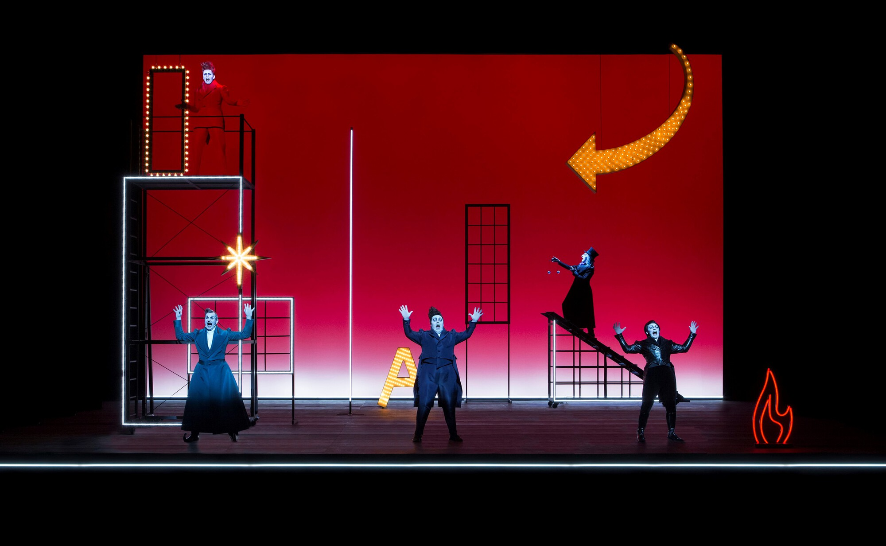
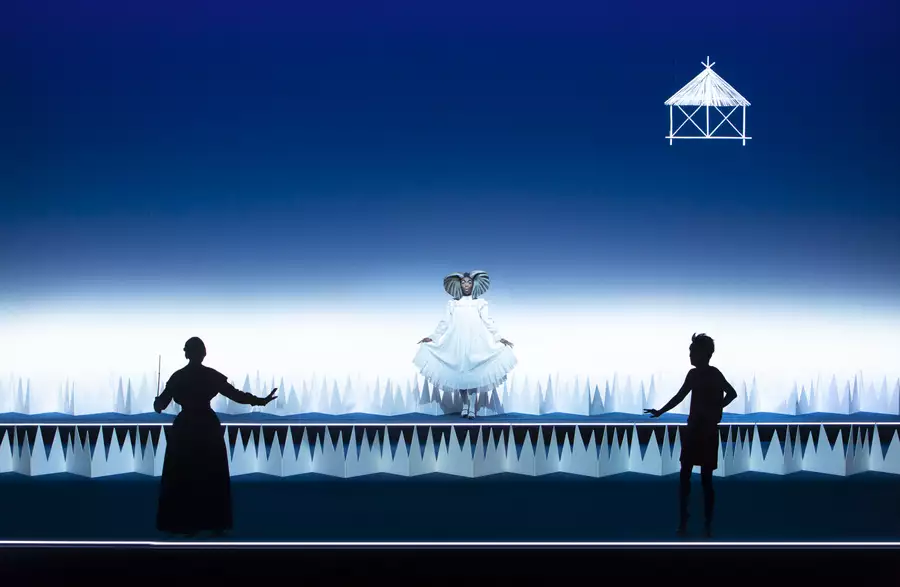
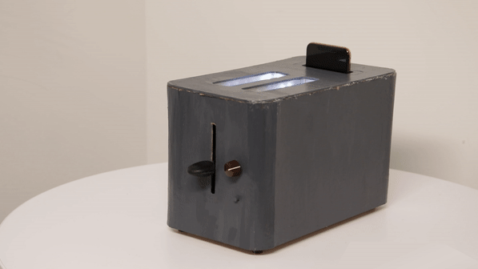

Tools
Learn to speak multiple design languages — spatial, digital, experiential — and actively experiment across their boundaries. The most interesting work in E happens at the intersections that haven't been named yet.
The E track gives you breadth — but breadth alone won't make you indispensable. Take the initiative to go deep in specific domains outside of design classes, developing the kind of expertise that turns a generalist into someone teams can't work without.
Working across unfamiliar mediums and tools will always involve uncertainty — but that's never an excuse to lower the bar. A well-crafted small-scale prototype communicates more than a unpolished full-scale experience ever could.


I'm Meijie. I design and prototype emerging technology in XR and AI. Currently designing Core UX for Meta Rayban Display glasses at Meta Reality Labs.
OPEN PROJECT


